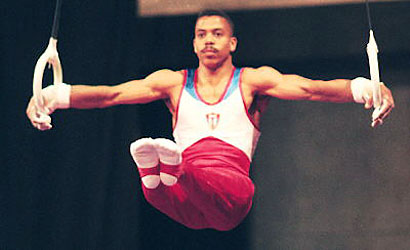

Erick Lopez (CUB)
2001 World PB Silver Medalist
1998 Goodwill Games V Bronze Medalist
4-Time Pan American Games AA Champion

Medal Total
World Championships: 1 Silver
Erick was born on December 29, 1972. Coached by Ernesto Izaquirre, Lopez is Cuba's most successful gymnast. He retired from gymnastics after the 2004 Olympic Games and now works at INDER (National Institute for Sports, Physical Education and Recreation) in Havana. Erick is married to another world-class gymnast -- Leyanet Gonzalez. They have a young son, Erick Jr.
Competition Results
1986
Jr. Friendship Tournament (Druzhba): 3rd Team, 3rd PB
Kosice International: 8th AA, 1st PB, 2nd HB
1989
Jr. Friendship Tournament (Druzhba): 2nd Team, 7th FX, 7th V
World Championships: 11th Team
1990
Caribbean Games: 1st Team, 2nd AA
1991
American Cup: 10th AA (prelims)
Intl. Mixed Pairs: 12th Team
Pan American Games: 1st Team, 1st AA, 1st V, 1st PB
1993
University Games: 8th AA
World Championships: 34th AA (prelims), 7th V
1994
Americas World Trials: 1st AA
Puerto Rico Cup: 1st AA
1995
Pan American Games: 2nd Team, 1st AA, 1st PH, 1st PB, 3rd R
1996
World Championships: 12th PH (semi-finals), 16th V (semi-finals)
1997
Blume Memorial: 5th AA
Moncada Cup: 1st AA
Pan American Games: 1st AA, 1st PH, 1st PB
University Games: 5th Team, 7th AA, 5th R, 8th PB
World Championships: 8th AA
1998
American Cup: 7th AA
Goodwill Games: 10th AA, 3rd V
1999
3-on-3 International: 7th Team
American Cup: 5th AA
French International: 18th AA
University Games: 9th Team, 3rd AA, 6th R
2000
American Cup: 1st AA
Copa Gimnastica: 3rd AA, 1st R, 2nd PH, 4th PB, 4th HB, 5th V
CUB-FRA Dual Meet: 1st Team, 1st AA, 1st PH, 1st V, 1st PB
Olympic Games: 17th AA
RCA Gymnastics Challenge: 2nd AA
2001
American Cup: 3rd AA
PAGU Championships: 1st AA, 1st R, 1st PB, 2nd FX, 2nd PH, 2nd V
World Championships: 5th AA, 2nd PB
2002
I Olimpiada del Deporte Cubano: 1st AA, 1st PH, 1st R, 2nd FX, 3rd V,
3rd HB
American Cup: 1st AA
2003
Pan American Games: 1st AA, 1st PH, 1st R, 1st V, 1st PB
World Championships: 5th AA, 7th PB
2004
II Olimpiada del Deporte Cubano: 1st Team, 1st AA, 1st FX, 1st R, 1st
V, 1st PB, 1st HB, 2nd PH
French International: 3rd V
Moncada Cup: 1st AA
Olympic Games: 20th AA
This page was created on August
12, 2005 and was last updated on August 25, 2007.
© Gymn Forum